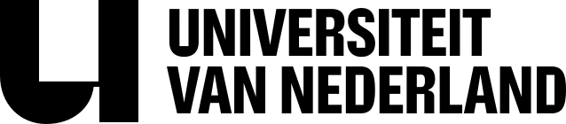

02 · Visuele identiteit
Herkenbaar in één oogopslag.
Een compacte gids voor de bouwstenen die het merk zijn eigen gezicht geven.
Eén duidelijke afzender.
Gebruik voor partnervermeldingen altijd het aangeleverde logo. Geef het ruimte en kies de variant met voldoende contrast.

Het logopakket bevat de goedgekeurde varianten voor lichte en donkere achtergronden.
Download het logopakketKleur, type en beeld werken samen.
Deze hoofdlijnen helpen bij briefings en co-branding. Voor nieuwe communicatie verzorgt het merkteam de uitwerking.
Kleur
Typografie
Vragen die
blijven hangen.
Grote, compacte koppen maken nieuwsgierig. Rustige lopende tekst brengt de uitleg.
“Nieuwsgierigheid is het begin van alles.”
Beeldtaal


Echte mensen, sterke crops en één onverwacht element. Nooit generieke stock.
Wetenschap voelt dichtbij.
We laten echte interactie, verwondering en energie zien. De fotografie voelt documentair, levendig en midden in het moment.